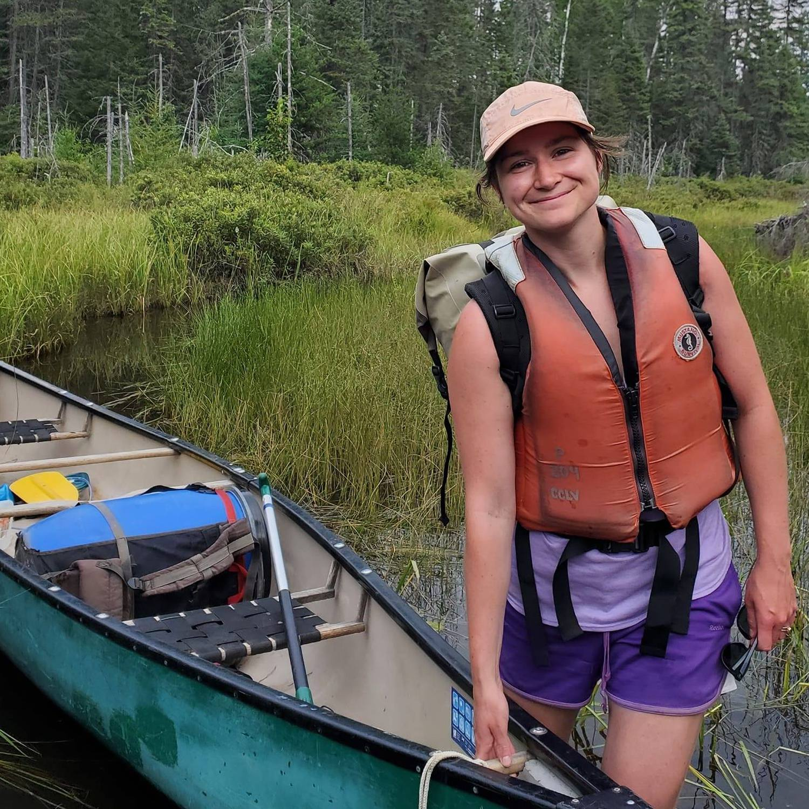

Spotted Lanternfly, photo by Nick Sloff
Spotted Lanternfly, photo by Nick Sloff
I'm interested in the ecology, impacts, and management of species that are changing their distributions due to humans. I work on the optimization of management and surveillance for species with dynamic ranges, including for invasive pests and trees undergoing climate-induced range shifts. I’m interested in creating better forecasts of future movement patterns, and better recommendations for invasive species management at large scales.

Me on a canoe camping trip in the Réserve Faunique de la Vérendrye in 2021. I am much more afraid of walking through streams in Australia.
I'm a part of the Quantitative and Applied Ecology group (QAECO) at the University of Melbourne within their newly formed School of Agriculture, Food, and Ecosystem Sciences (SAFES).
I'm a recent arrival to UniMelb from Canada, and I continue to work in collaboration with Canadian government agencies, including Natural Resources Canada- Canadian Forest Service (NRCan-CFS) and Environment and Climate Change Canada (ECCC). I have longstanding partnerships with researchers at the United States Forest Service (USDA-FS).
I’m also a member of the InvaCost project - a living database and working group that quantifies the economic toll of invasive species
I was previously an NSERC postdoctoral fellow in Joe Bennett's lab at Carleton University.
I'm actively recruiting a team of engaged early career scientists who are looking to develop their quantitative skills. Take a look at my Research tab for any specific project opportunities available. Get in touch with me if you are a prospective Honours, Masters, or PhD student in search of a supervisor for an applied conservation project with a quantitative focus (no quantitative skills needed to apply!). If you're interested in doing a Postdoc with me, let's talk about how we can co-design a grant or fellowship application that's aligned with your goals!
Learn more about my work from my recent IPRRG webinar and coverage of my work on CBC's Quirks and Quarks.
I acknowledge the Traditional Owners of the unceded lands where I work and live — the Wurundjeri people of the Kulin Nation — and pay my respects to their Elders, past, present and emerging.